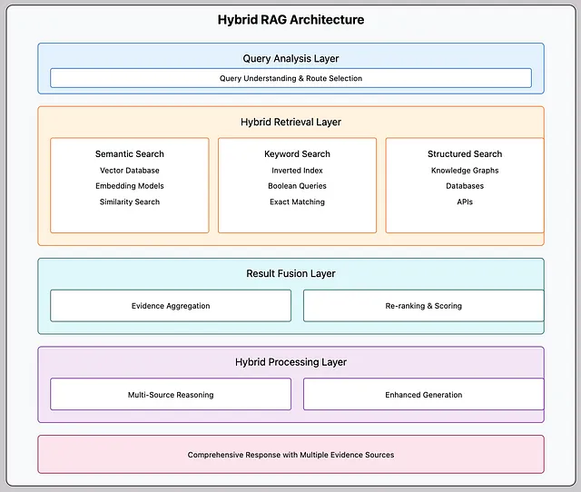

概覽
在企業環境中實施混合式檢索增強生成（Hybrid RAG）是一項複雜的系統工程，旨在結合大型語言模型（LLM）的生成能力與多源數據的即時檢索能力。其核心挑戰在於彌合LLM對非結構化文本的理解能力與企業高價值結構化數據之間的鴻溝。成功的實施不僅需要建立一個能同時處理向量與圖譜數據的整合架構，還必須克服技術準確性、高昂的資源成本、嚴格的資安隱私以及使用者學習曲線等多重障礙。最終目標是實現「資料平權化」，讓業務使用者能透過自然語言即時、準確地獲取決策所需洞見，同時確保答案的來源透明可驗證，從而提升企業整體的數據驅動決策效率。
Hybrid RAG 架構設計
實施挑戰分析
資料處理與整合
大型語言模型的原生限制
LLM在文本生成方面表現出色，但對於表格數據中欄位與資料表之間的複雜關聯性缺乏深層理解。企業的關鍵任務數據以結構化表格形式儲存，LLM無法直接洞察其內在邏輯。
結構化資料的轉換複雜性
關鍵步驟是將表格數據轉換為圖資料結構。LLM天生能理解圖譜中的節點與關係，這種轉換是打通LLM與企業核心資料庫之間壁壘的核心技術。
資料的即時性與實效性
企業營運數據動態更新，Hybrid RAG系統必須具備即時存取最新數據的能力，以確保答案具有實效性與商業價值。
技術實施與準確性
處理複雜查詢的難度
直接讓LLM生成複雜SQL的失敗率極高。相比之下，Graph RAG透過讓LLM生成圖查詢來探索數據關聯，準確性遠高於SQL生成。
架構組成對比
理性、精準處理結構化數據
感性、模糊處理非結構化文本
資源投入與成本效益分析
高昂的運算資源需求
從頭訓練405B參數級別的模型需要數千萬新台幣預算，約98%的中小企業無法承擔如此高昂的算力成本。
雲端與地端部署選擇
直接訂閱雲端LLM服務是更經濟的選擇，企業可專注於數據整合與應用開發，而非基礎設施維護。
安全性、隱私與透明度
企業級隱私與安全管理
建立基於角色的存取控制（RBAC），確保「什麼人可以問什麼問題，並看到什麼樣的答案」，防止敏感資訊外洩。
答案透明度與可驗證性
所有答案必須具備可追溯性，能明確指出資訊來源並展示背後的查詢邏輯，建立使用者對AI系統的信任。
使用者採納與學習曲線
資料平權化的實現
讓第一線業務使用者無需依賴IT或DBA提供數據報表，透過對話式AI隨時獲取所需數據，無需具備SQL等專業技能。
使用者提問技能的培養
與AI進行有效對話需要學習。業務使用者需學習精準提問，問題語意表達必須清晰明確。透過持續引導和培訓，才能充分發揮系統價值。